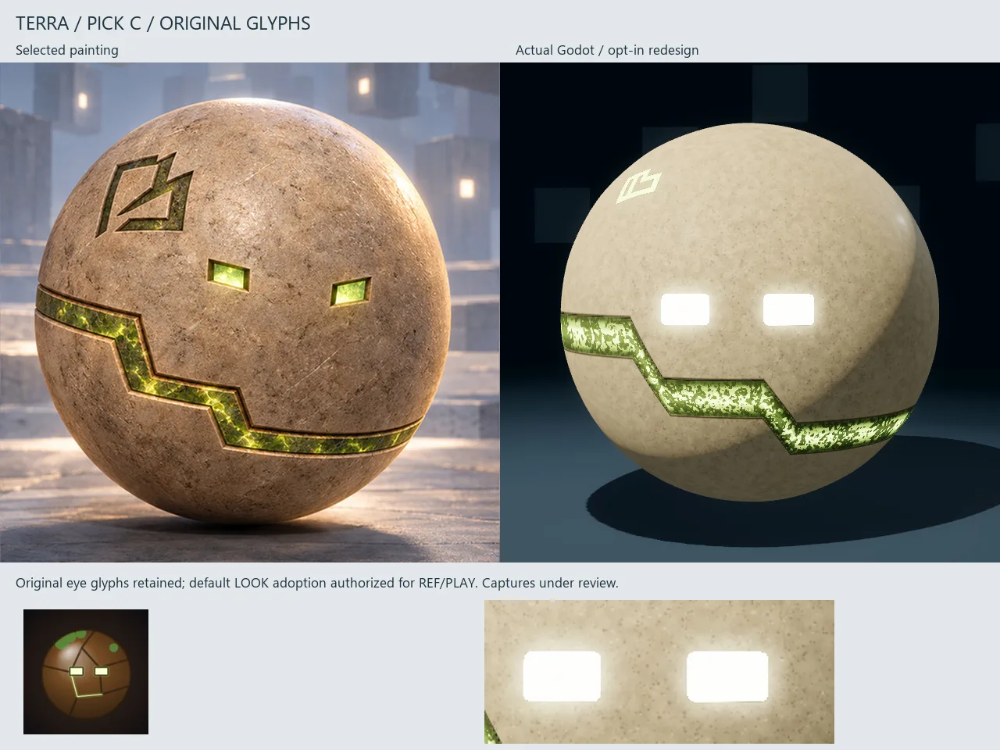
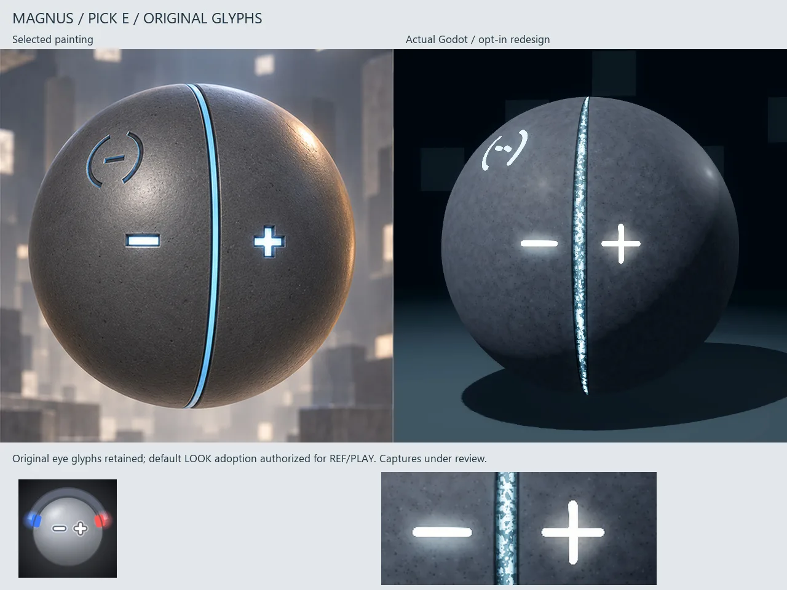

Building the shared game
Work is now focused on the ordinary game: choose an orb, move freely, shape a technique and face an opponent under the same rules. The controls, native simulation, world saves, places and dialogue are being connected in one project. Several parts are implemented in source, but the combined build still needs its next launch and play check.
The shared foundation now includes 31 reusable resources and scenes, an architecture guide, extension playbooks and a backlog of 120 concrete tasks. The roster plan covers 138 identities and the world plan covers 58 places. Those counts describe authored plans and data; they do not mean every character or place is finished and playable.
The next integration pass is working on native power consequences, fair fighter decisions, saved sessions and audio driven by actual game events. We will check the normal entry point first, then movement, techniques, saving and a full match. Performance will be measured during active play before we report a frame-rate result.
The images below are TERRA and MAGNUS appearance comparisons from October 2, included as visual context. Their small original eye shapes and solid mineral shells remain the direction. They are earlier studio studies, not captures of today's combined game, and the bright inlays and flat eye cores still need refinement.
Inside the work

